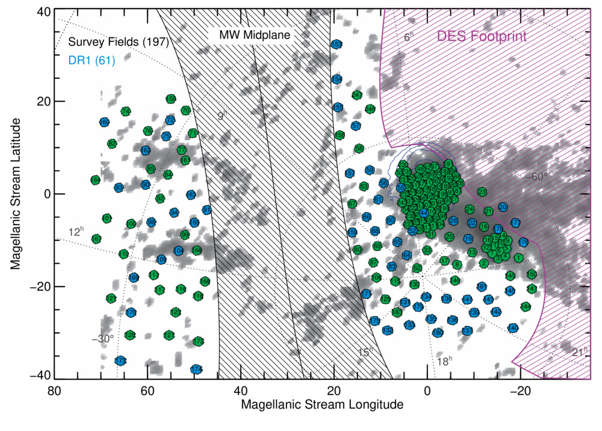
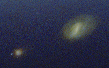
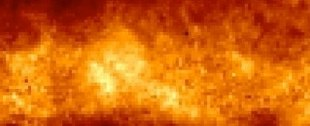
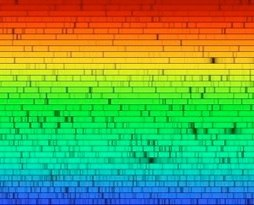
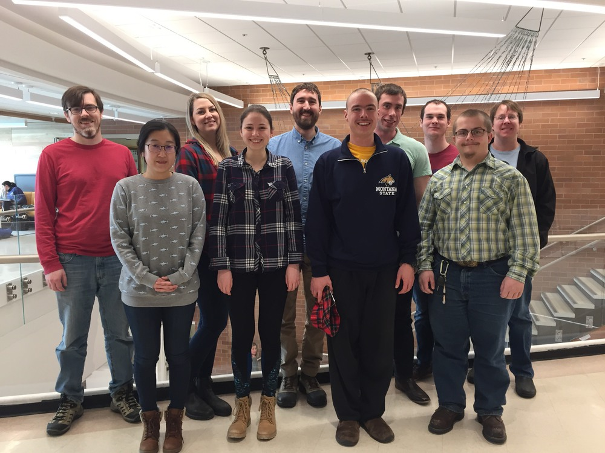

DAVID NIDEVER
Assistant Professor - MSU
Research
SMASH: Survey of the MAgellanic Stellar History
I am PI of the Survey of the MAgellanic Stellar History (SMASH), a community NOAO DECam survey. SMASH is the most extensive and deep photometric survey of the stellar outskirts of the MCs and is designed to reveal faint stellar structures left over from the formation and interaction histories of these dwarf galaxies. SMASH has used ~50 nights with DECam over the past three years to map an area of 2400 deg2 at 20% filling factor to ~24th mag and is able to detect Magellanic stellar populations to a surface brightness limit of ~35 mag/arsec2. SMASH has already made some exciting discoveries and had its first public data release in January 2017 via the NOIRLab Astro Data Lab.

APOGEE
The Apache Point Observatory Galactic Evolution Experiment (APOGEE) is a SDSS-III project that is obtaining high-S/N, high-resolution near-infrared spectra for ∼100,000 stars in the Milky Way disk, bulge and halo to study the chemical and kinematical evolution of the Galaxy. I have been a major player in carrying out this survey, developing an automated pipeline to reduce and obtain accurate radial velocities (∼0.15 km/s) for ∼500,000 spectra. In addition, I am the reduction pipeline team leader for APOGEE-2 in SDSS-IV. I use the APOGEE data to explore the chemical evolution of the Milky Way’s stellar disk.
MAPS: The MAgellanic Periphery Survey
I am PI of the MAgellanic Periphery Survey (MAPS), the first extensive survey of stars in the outskirts of the Magellanic Clouds to search for signs of stellar substructure and halos. MAPS is a large-scale photometric and spectroscopic survey with fields sampling all position angles and radii out to ∼20 kpc. Photometric data for 230 fields (sampling 2000 square degrees and reaching to V~22–24) and multi-object medium-resolution spectroscopy for 110 fields (reaching the bottom of the LMC red clump at V=19.3) were obtained with 40 nights on 4–6m class telescopes.
• Nidever et al. 2013, ApJ, 779, 15
• Nidever et al. 2011, ApJ Letters, 733, 10
• Majewski, Nidever et al. 2009, IAUS, 256, 51
Data files can be accessesd from here

The Magellanic Stream
According to galaxy formation models, the Milky Way formed by the successive merging of smaller galaxies which produced remnant streams. A prime example of this is the Magellanic Stream, a long gaseous stream trailing the Magellanic Clouds (MCs) that will eventually be accreted by the MW and likely help fuel the next generation of stars.
Using the Leiden-Argentine-Bonn HI all-sky survey, I was able to track one of the filaments of the MS back to its origin in the southeastern region of the Large Magellanic Cloud and showed that star formation feedback (blowout) plays an important role in the formation of the MS.
Additionally, I performed a 100-hour survey on the 110-m Green Bank Telescope (GBT) and showed that the MS is 40 deg longer than previously thought. I am currently conducting a larger GBT survey to map the MS to even larger distances with the goal of constraining the mass of the Milky Way.

Mapping Milky Way Dust
Light-obscuring dust at low Galactic latitudes has been a persistent problem for studies of the Milky Way structure, rendering the often used color-magnitude diagrams (CMDs) essentially unusable. We introduce a method, the Rayleigh-Jeans Color Excess method (RJCE), to calculate accurate star-by-star extinctions. RJCE takes advantage of the fact that the NIR-MIR color of all stars is nearly identical and, therefore, any observed deviation from the common color is due to reddening. With accurate star-by-star reddenings, CMDs can be properly dereddened allowing different stellar populations to be identified. I used the RJCE method with the 2MASS and GLIMPSE surveys to produce high-resolution extinction maps of the Galactic midplane using main-sequence, red clump, and red giant branch stars (each probing different distances).
• Nidever, Zasowski & Majewski 2012, ApJS, 201, 35
• Majewski, Zasowski & Nidever 2011, ApJ, 739, 25
• Zasowski, Majewski, Indebetouw, Meade, Nidever et al. 2009, ApJ, 707, 510

Accurate Radial Velocities
As an undergraduate I worked with G. Marcy and D. Fischer on obtaining accurate “absolute” radial velocities for all stars in the Extrasolar Planet Search Project. The final random errors of the radial velocities were roughly 35 m/s. Observations of the asteroid Vesta were used to set the zeropoint of the radial velocity scale because its motion is precisely known from solar system dynamics and this minimized any systematic errors for solar-like stars. Our paper provides accurate radial velocities for 889 stars and new Keplerian orbital solutions for 15 stars, seven with minimum masses for the companion in the brown dwarf range. Our accurate radial velocities are used extensively by the community and form part of the radial velocity standard star list for the GAIA mission.
• Nidever, Marcy, Butler, Fischer & Vogt 2002, ApJS, 141, 503 (361 citations to date)

Research Group
2018
-
•Yumi Choi (postdoc)
-
•Cody Brown (graduate student)
-
•Josh Povick (graduate student)
-
•Sam Hebenstreit (graduate student)
-
•Amy Miller (graduate student)
-
•Katie Fasbender (graduate student)
-
•John Singleton (graduate student, CS)
-
•Joshua Bartkoske (undergraduate student)
-
•Chris Miller (undergraduate student)
